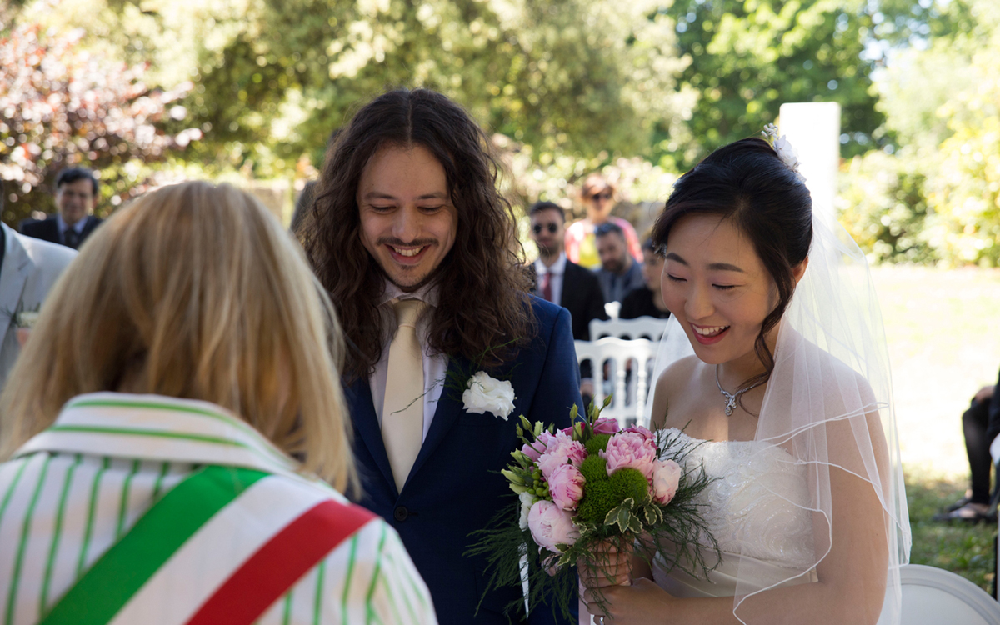
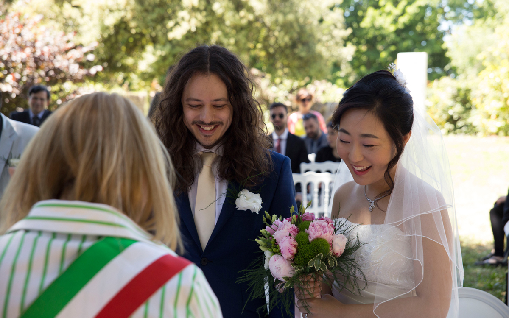

About me
Hi, I am Jihyun. I was born in a small town, South Korea. When I was young, I was always curious about foreign countries and their culture. I always wanted to have chances to go abroad. I studied international trading at university. Because I thought that working for a trading company could make me have more opportunities to travel around the world.
After I graduated from university, I finally had a chance to live abroad. I went to Canada and lived in a small town called Whistler for 1 year. It was an amazing experience. Everything was different from Korea. I really enjoyed living there. I improved my English a lot, I worked in a few places and I had some good trips to the cities near Whistler. But the best thing was that I met many nice people who were from various countries. Most of them were so kind and it was really enjoyable to talk to them about dreams, culture and life.
After I went back to Korea, I started working for a travel agency. But the job was quite different from what I expected. So several months later, I moved to an advertising company and worked in a sales department. But it didn't take so long to realise that I am not good at sales business. So I had to find a new job, but at the time, I didn't know what I wanted to do and what I wanted to be. So, I decided to have a break to think and find what I want to do for my future and I thought that this could be a good chance to explore European countries. So, I came to the UK.
I got a job as a barista in London. I learnt how to make coffee and latte art, and I met a guy. He is my husband now and the UK is like my second home country. After the barista job, I worked as an office administrator in an online based trading company for 2 years and now I am studying programming and coding to be a web developer!


 
